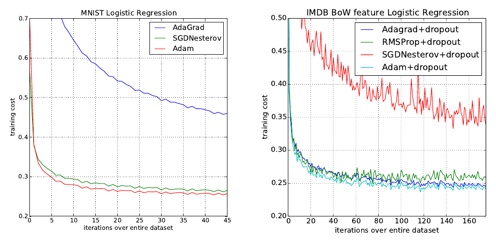
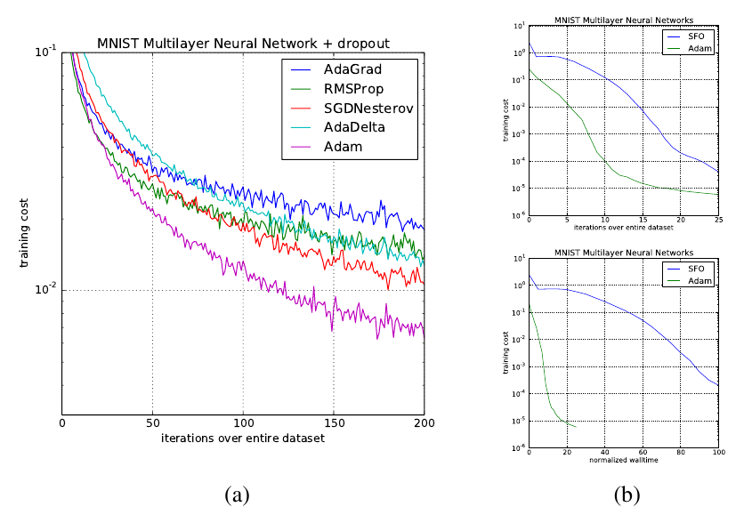
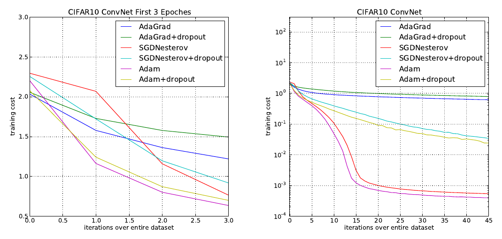
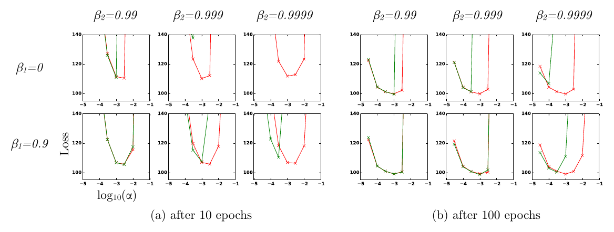

Adam：一种随机优化方法Adam: A Method for Stochastic Optimization
我们提出 Adam，一种对随机目标函数做一阶梯度优化的算法，其依据是对低阶矩的自适应估计。该方法易于实现、计算高效、内存需求很小、对梯度的对角缩放保持不变，并且很适合数据量和/或参数量很大的问题。该方法同样适用于非平稳目标以及梯度噪声很大和/或梯度稀疏的问题。其超参数具有直观解释，通常只需很少的调参。文中还讨论了若干相关算法，Adam 正是从它们中获得启发。我们也分析了该算法的理论收敛性质，并在在线凸优化框架下给出了收敛速率的遗憾界，其量级与已知最好结果相当。实验结果表明 Adam 在实践中表现良好，优于其他随机优化方法。最后，我们讨论了 AdaMax，它是 Adam 的一个基于无穷范数的变体。
1 引言
基于梯度的随机优化在许多科学与工程领域都具有核心的实用价值。这些领域中的许多问题都可以表述为对某个标量参数化目标函数的优化，即针对其参数求最大或最小值。如果该函数对其参数可微，梯度下降就是一种相对高效的优化方法，因为计算关于全部参数的一阶偏导数，其计算复杂度与仅仅求值该函数相当。目标函数常常是随机的。例如，许多目标函数由在不同数据子样本上求值的若干子函数之和构成；此时，通过针对单个子函数做梯度步，即随机梯度下降（stochastic gradient descent, SGD）或上升，可以使优化更高效。SGD 已经证明自己是一种高效且有效的优化方法，并且是许多机器学习成功案例的核心，例如近年来深度学习的进展（Deng et al., 2013; Krizhevsky et al., 2012; Hinton & Salakhutdinov, 2006; Hinton et al., 2012a; Graves et al., 2013）。目标函数也可能有除数据子采样之外的噪声来源，例如 dropout（Hinton et al., 2012b）正则化。对于所有这类带噪目标，都需要高效的随机优化技术。本文关注的是高维参数空间下随机目标的优化。在这类情形下，高阶优化方法并不适用，因此本文的讨论仅限于一阶方法。
我们提出 Adam，一种高效的随机优化方法，只需要一阶梯度且内存需求很小。该方法根据梯度的一阶矩与二阶矩的估计，为不同参数分别计算自适应的学习率；Adam 这个名字来自 adaptive moment estimation（自适应矩估计）。我们的方法旨在结合两种近期流行方法的长处：AdaGrad（Duchi et al., 2011）在稀疏梯度下表现良好，RMSProp（Tieleman & Hinton, 2012）在在线与非平稳环境下表现良好；第 5 节澄清了 Adam 与这些方法及其他随机优化方法之间的重要联系。Adam 的若干优势在于：参数更新的幅度对梯度的缩放保持不变；其步长近似地被步长超参数所界定；它不要求目标函数平稳；它能够处理稀疏梯度；并且它自然地实施了一种步长的退火。
2 算法
我们提出的算法 Adam 的伪代码见算法 1。设 f(θ) 是一个带噪目标函数：一个关于参数 θ 可微的随机标量函数。我们关心的是最小化该函数关于其参数 θ 的期望值 E[f(θ)]。我们用 f1(θ), …, fT(θ) 表示该随机函数在相继时间步 1, …, T 上的实现。这种随机性可能来自对数据点随机子样本（小批量）的取用，也可能来自函数本身的固有噪声。我们用 gt = ∇θ ft(θ) 表示梯度，即 ft 关于 θ 的偏导数向量在时间步 t 的取值。
该算法对梯度的指数滑动平均 (mt) 与梯度平方的指数滑动平均 (vt) 进行更新，其中超参数 β1, β2 ∈ [0, 1) 控制这些滑动平均的指数衰减率。滑动平均本身就是梯度一阶矩（均值）与二阶原始矩（未中心化方差）的估计。然而，这些滑动平均被初始化为 0（零向量），这使得矩估计偏向零，在最初的若干时间步尤为明显，而当衰减率较小（即 β 接近 1）时更是如此。好消息是，这种初始化偏差很容易被抵消，从而得到偏差校正后的估计 m̂t 与 v̂t。详见第 3 节。
注意，算法 1 的效率可以（以清晰性为代价）通过改变计算顺序来提升，例如把循环中的最后三行替换为：αt = α · √(1 − β2t) / (1 − β1t)，以及 θt ← θt−1 − αt · mt / (√vt + ε̂)。
细节见第 2 节；那里也给出了一种略微更高效（但较不清晰）的计算顺序。gt2 表示逐元素平方 gt ⊙ gt。在被测试的机器学习问题上，良好的默认设置为 α = 0.001、β1 = 0.9、β2 = 0.999、ε = 10−8。所有向量运算都是逐元素的。β1t 与 β2t 分别表示 β1 与 β2 的 t 次幂。
要求：β1, β2 ∈ [0, 1)：矩估计的指数衰减率
要求：f(θ)：带参数 θ 的随机目标函数
要求：θ0：初始参数向量
- m0 ← 0（初始化一阶矩向量）
- v0 ← 0（初始化二阶矩向量）
- t ← 0（初始化时间步）
- 当 θt 未收敛时，重复：
- t ← t + 1
- gt ← ∇θ ft(θt−1)（获取时间步 t 上目标函数关于 θ 的随机梯度）
- mt ← β1 · mt−1 + (1 − β1) · gt（更新有偏一阶矩估计）
- vt ← β2 · vt−1 + (1 − β2) · gt2（更新有偏二阶原始矩估计）
- m̂t ← mt / (1 − β1t)（计算偏差校正后的一阶矩估计）
- v̂t ← vt / (1 − β2t)（计算偏差校正后的二阶原始矩估计）
- θt ← θt−1 − α · m̂t / (√v̂t + ε)（更新参数）
- 结束循环
- 返回 θt（所得参数）
第 2 节描述该算法及其更新规则的性质。第 3 节解释我们的初始化偏差校正技术，第 4 节对 Adam 在在线凸规划中的收敛性做理论分析。在实验上，如第 6 节所示，我们的方法在各种模型与数据集上一致地优于其他方法。总体而言，我们表明 Adam 是一种通用算法，能够扩展到大规模、高维的机器学习问题。
2.1 Adam 的更新规则
Adam 更新规则的一个重要性质是它对步长的细致选择。假设 ε = 0，则在时间步 t 于参数空间中实际迈出的有效步为 Δt = α · m̂t / √v̂t。有效步长有两个上界：当 (1 − β1) > √(1 − β2) 时，|Δt| ≤ α · (1 − β1) / √(1 − β2)；否则 |Δt| ≤ α。第一种情况只在最严重的稀疏情形下出现：某个梯度除当前时间步之外，在所有时间步上都为零。在稀疏程度较低的情形下，有效步长会更小。当 (1 − β1) = √(1 − β2) 时，有 |m̂t / √v̂t| < 1，因此 |Δt| < α。在更常见的情形中，由于 |E[g] / √(E[g2])| ≤ 1，我们有 m̂t / √v̂t ≈ ±1。每个时间步在参数空间中迈出的有效幅度近似地被步长设置 α 所界定，即 |Δt| ≲ α。这可以理解为在当前参数值附近建立了一个信赖域；超出这个范围，当前的梯度估计就不再提供足够的信息。这通常使得事先判断 α 的正确量级变得相对容易。例如对许多机器学习模型，我们往往事先就知道：好的最优点以很高的概率落在参数空间中的某个区域内；例如对参数有先验分布并不罕见。由于 α 设定了参数空间中步幅（的上界），我们常常能够推断出 α 合适的量级，使得从 θ0 出发可以在若干次迭代内到达最优点。稍微滥用一下术语，我们把比值 m̂t / √v̂t 称为信噪比（signal-to-noise ratio, SNR）。SNR 越小，有效步长 Δt 就越接近零。这是一个值得期望的性质，因为 SNR 较小意味着：m̂t 的方向是否对应真实梯度的方向，存在更大的不确定性。例如，SNR 在接近最优点时通常趋近于 0，从而使参数空间中的有效步变小：这是一种自动退火的形式。有效步长 Δt 还对梯度的尺度保持不变：把梯度 g 缩放 c 倍，会以 c 倍缩放 m̂t、以 c2 倍缩放 v̂t，两者相互抵消：(c · m̂t) / √(c2 · v̂t) = m̂t / √v̂t。
3 初始化偏差校正
如第 2 节所述，Adam 使用了初始化偏差校正项。这里我们推导二阶矩估计对应的项；一阶矩估计的推导与之完全类似。设 g 是随机目标 f 的梯度，我们希望用梯度平方的指数滑动平均来估计它的二阶原始矩（未中心化方差），衰减率为 β2。设 g1, …, gT 是相继时间步上的梯度，每个都是从某个底层梯度分布中抽取的，即 gt ~ p(gt)。把该指数滑动平均初始化为 v0 = 0（零向量）。首先注意，指数滑动平均在时间步 t 的更新 vt = β2 · vt−1 + (1 − β2) · gt2（其中 gt2 表示逐元素平方 gt ⊙ gt）可以写成此前所有时间步上梯度的函数：
我们希望知道 E[vt]，即指数滑动平均在时间步 t 的期望值，与真实二阶矩 E[gt2] 的关系，这样就能修正二者之间的偏差。对式 (1) 左右两边取期望：
其中，若真实二阶矩 E[gi2] 是平稳的，则 ζ = 0；否则 ζ 也可以保持很小，因为指数衰减率 β1 可以（也应该）取得使指数滑动平均对距今过远的梯度只赋予很小的权重译注。剩下的是 (1 − β2t) 这一项，它源于把滑动平均初始化为零。因此在算法 1 中我们除以这一项，以校正初始化偏差。
在梯度稀疏的情况下，要想可靠地估计二阶矩，就需要通过对许多梯度求平均，也就是取一个较小的 β2；然而恰恰是在 β2 较小的这种情形下，若缺少初始化偏差校正，初始几步会大得多。
4 收敛性分析
我们借助 (Zinkevich, 2003) 提出的在线学习框架来分析 Adam 的收敛性。给定任意一段未知的凸代价函数序列 f1(θ), f2(θ), …, fT(θ)。在每个时刻 t，我们的目标是预测参数 θt，并在一个事先未知的代价函数 ft 上对它进行评估。由于事先并不知道该序列的性质，我们用遗憾来评价算法，即对此前所有步，在线预测 ft(θt) 与来自可行集的、最好的固定点参数 ft(θ*) 之间差值的总和。具体而言，遗憾定义为：
其中 θ* = arg minθ ∈ X TΣt = 1 ft(θ)。我们证明 Adam 具有 O(√T) 的遗憾界，证明见附录。我们的结果与这一一般凸在线学习问题已知的最好界相当。为简化记号，我们还用到一些定义：gt ≜ ∇ft(θt)，gt,i 为其中第 i 个元素；我们定义 g1:t,i ∈ Rt 为一个向量，它包含截至 t 的所有迭代中梯度的第 i 维，即 g1:t,i = [g1,i, g2,i, ···, gt,i]。此外，我们定义 γ ≜ β12 / √β2。后面的定理在下列条件下成立：学习率 αt 以 t−1/2 的速率衰减，一阶矩滑动平均系数 β1,t 以 λ 呈指数衰减，而 λ 通常接近 1，例如 1 − 10−8。
定理 4.1。假设函数 ft 的梯度有界，对所有 θ ∈ Rd 有 ‖∇ft(θ)‖2 ≤ G、‖∇ft(θ)‖∞ ≤ G∞；且 Adam 生成的任意 θt 之间的距离有界，对任意 m, n ∈ {1, …, T} 有 ‖θn − θm‖2 ≤ D、‖θm − θn‖∞ ≤ D∞；并且 β1, β2 ∈ [0, 1) 满足 β12 / √β2 < 1。令 αt = α / √t，β1,t = β1 λt−1，λ ∈ (0, 1)。则对所有 T ≥ 1，Adam 满足如下保证：
我们的定理 4.1 意味着：当数据特征稀疏且梯度有界时，其中的求和项可以远小于其上界——即 dΣi = 1 ‖g1:T,i‖2 ≪ d G∞√T 且 dΣi = 1 √(T v̂T,i) ≪ d G∞√T——特别是在函数类与数据特征形如 (Duchi et al., 2011) 第 1.2 节所述的 b 截面形式时。他们关于期望值 E[Σi=1d ‖g1:T,i‖2] 的结果同样适用于 Adam。特别地，像 Adam 与 Adagrad 这样的自适应方法，可以取得 O(log d √T)，相对于非自适应方法的 O(√(dT)) 有所改进。让 β1,t 向零衰减在我们的理论分析中很重要，并且也与先前的经验发现一致，例如 (Sutskever et al., 2013) 建议在训练末期降低动量系数可以改善收敛。
最后，我们可以表明 Adam 的平均遗憾收敛：
推论 4.2。假设函数 ft 的梯度有界，对所有 θ ∈ Rd 有 ‖∇ft(θ)‖2 ≤ G、‖∇ft(θ)‖∞ ≤ G∞；且 Adam 生成的任意 θt 之间的距离有界，对任意 m, n ∈ {1, …, T} 有 ‖θn − θm‖2 ≤ D、‖θm − θn‖∞ ≤ D∞。则对所有 T ≥ 1，Adam 满足如下保证：
该结果可由定理 4.1 以及 dΣi = 1 ‖g1:T,i‖2 ≤ d G∞√T 得到。因此，limT→∞ R(T)/T = 0。
5 相关工作
与 Adam 有直接关系的优化方法有 RMSProp（Tieleman & Hinton, 2012; Graves, 2013）和 AdaGrad（Duchi et al., 2011）；下面讨论这些关系。其他随机优化方法还包括 vSGD（Schaul et al., 2012）、AdaDelta（Zeiler, 2012）以及 Roux & Fitzgibbon (2010) 提出的自然牛顿法，它们都通过一阶信息估计曲率来设定步长。Sum-of-Functions Optimizer（SFO）（Sohl-Dickstein et al., 2014）是一种基于小批量的拟牛顿方法，但与 Adam 不同，它的内存需求与数据的小批量划分数成正比，在 GPU 这类内存受限的系统上往往不可行。与自然梯度下降（natural gradient descent, NGD）（Amari, 1998）一样，Adam 采用了一个适应数据几何结构的预条件子，因为 v̂t 是对Fisher 信息矩阵对角线的近似（Pascanu & Bengio, 2013）；不过（与 AdaGrad 一样）Adam 的预条件子比朴素 NGD 更为保守，因为它只用了对角线 Fisher 信息矩阵近似之逆的平方根作为预条件。
RMSProp：与 Adam 密切相关的优化方法是 RMSProp（Tieleman & Hinton, 2012）。有时会使用带动的版本（Graves, 2013）。带动量的 RMSProp 与 Adam 之间有几处重要差别：带动量的 RMSProp 是先对缩放后的梯度加上动量，再据此产生参数更新；而 Adam 的更新则直接用梯度一阶与二阶矩的滑动平均来估计。RMSProp 也缺少偏差校正项；这一点在 β2 接近 1 时最为重要（稀疏梯度的情况下正需要如此），因为此时不校正偏差会导致极大的步长，并且常常发散，我们在第 6.4 节也用实验说明了这一点。
AdaGrad：对稀疏梯度表现良好的算法是 AdaGrad（Duchi et al., 2011）。其基本版本按 θt+1 = θt − α · gt / √( tΣi = 1 gt2 ) 更新参数。注意，如果我们取 β2 从下方无限接近 1，则 limβ2→1 v̂t = t−1 · tΣi = 1 gt2。AdaGrad 相当于一个这样的 Adam 版本：β1 = 0、(1 − β2) 无穷小，并把 α 替换为退火版本 αt = α · t−1/2，即 θt − α · t−1/2 · m̂t / √(limβ2→1 v̂t) = θt − α · t−1/2 · gt / √( t−1 · tΣi = 1 gt2 ) = θt − α · gt / √( tΣi = 1 gt2 )。注意，一旦去掉偏差校正项，Adam 与 AdaGrad 之间的这种直接对应关系就不再成立；若没有偏差校正，如 RMSProp 那样，β2 无限接近 1 将导致无穷大的偏差，以及无穷大的参数更新。
6 实验
为了从经验上评估所提出的方法，我们考察了几种流行的机器学习模型，包括逻辑回归、多层全连接神经网络和深度卷积神经网络。通过使用大模型与大数据集，我们表明 Adam 能够高效地解决实际的深度学习问题。
在比较不同的优化算法时，我们使用相同的参数初始化。诸如学习率、动量之类的超参数在一张稠密网格上搜索，结果按最佳超参数设置报告。
6.1 实验：逻辑回归
我们在 MNIST 数据集上对 L2 正则化的多类逻辑回归评估所提出的方法。逻辑回归具有已被充分研究的凸目标函数，这使它适合用于比较不同优化器，而不必担心局部极小值问题。我们逻辑回归实验中的步长 α 按 1/√t 衰减调节，即 αt = α/√t，与第 4 节的理论预测一致。该逻辑回归直接在 784 维图像向量上分类类别标签。我们用小批量大小 128，把 Adam 与带 Nesterov 动量的加速 SGD 以及 Adagrad 进行比较。根据图 1，我们发现 Adam 的收敛与带动的 SGD 相近，二者都比 Adagrad 收敛更快。
如 (Duchi et al., 2011) 所讨论的，Adagrad 能高效处理稀疏特征与稀疏梯度，这是其主要理论结果之一；而 SGD 在学习稀有特征方面表现欠佳。步长按 1/√t 衰减的 Adam 在理论上应当匹配 Adagrad 的表现。我们用 (Maas et al., 2011) 的 IMDB 影评数据集考察稀疏特征问题。我们把 IMDB 影评预处理为词袋（bag-of-words, BoW）特征向量，包含出现频率最高的前 10,000 个词。每条影评的 10,000 维 BoW 特征向量高度稀疏。如 (Wang & Manning, 2013) 所建议的，训练时可以对 BoW 特征施加 50% 的 dropout 噪声以防止过拟合。在图 1 中，无论是否加 dropout 噪声，Adagrad 都大幅优于带 Nesterov 动量的 SGD。Adam 的收敛速度与 Adagrad 一样快。Adam 的经验表现与我们在第 2、4 节的理论发现一致。与 Adagrad 类似，Adam 能够利用稀疏特征，取得比通常的带动量 SGD 更快的收敛速度。

6.2 实验：多层神经网络
多层神经网络是具有非凸目标函数的强大模型。虽然我们的收敛性分析并不适用于非凸问题，但我们在经验上发现，Adam 在这类情形下常常优于其他方法。在实验中，我们的模型选择与该领域此前的文献保持一致；本实验使用一个含两个全连接隐层、每层 1000 个隐单元并采用 ReLU 激活的神经网络模型，小批量大小为 128。
首先，我们在标准确定性交叉熵目标函数上研究不同优化器，并对参数施加 L 权重衰减以防止过拟合译注。Sum-of-Functions（SFO）方法（Sohl-Dickstein et al., 2014）是近来提出的一种基于数据小批量的拟牛顿方法，在多层神经网络的优化上表现出良好性能。我们使用他们的实现，并与 Adam 比较来训练这类模型。图 2 表明，无论从迭代次数还是从实际时钟时间看，Adam 的进展都更快。由于更新曲率信息的开销，SFO 每次迭代比 Adam 慢 5–10 倍，并且内存需求与小批量数目成正比。
诸如 dropout 这样的随机正则化方法，是防止过拟合的有效手段，并且以其简单性在实践中常被使用。SFO 假设子函数是确定性的，在带随机正则化的代价函数上确实无法收敛。我们比较 Adam 与其他随机一阶方法在带 dropout 噪声训练的多层神经网络上的效果。图 2 给出我们的结果；Adam 显示出比其他方法更好的收敛性。

6.3 实验：卷积神经网络
具有若干层卷积、池化与非线性单元的卷积神经网络（CNN）在计算机视觉任务中取得了相当大的成功。与大多数全连接神经网络不同，CNN 中的权重共享导致不同层的梯度差异很大。在实践中应用 SGD 时，卷积层常常使用较小的学习率。我们展示 Adam 在深度 CNN 上的有效性。我们的 CNN 架构有三级交替的 5×5 卷积滤波器与步长为 2 的 3×3 最大池化，其后接一个含 1000 个修正线性隐单元（ReLU）的全连接层。输入图像经过白化预处理，并对输入层与全连接层施加 dropout 噪声。小批量大小同样设为 128，与此前实验一致。

有趣的是，如图 3（左）所示，虽然 Adam 与 Adagrad 在训练的初始阶段都能迅速降低代价，但对 CNN 而言，如图 3（右）所示，Adam 与 SGD 最终都比 Adagrad 收敛快得多。我们注意到，二阶矩估计 v 在若干 epoch 之后衰减到零，并被算法 1 中的 ε 所主导。因此，与第 6.2 节的全连接网络相比，在 CNN 中二阶矩估计是对代价函数几何结构的一个糟糕近似。相反，在 CNN 中通过一阶矩来降低小批量方差更为重要，并且促成了加速。结果，在这个特定实验中 Adagrad 的收敛比其他方法慢得多。尽管 Adam 相对带动量的 SGD 只有边际改进，但它能自适应地为不同层调整学习率尺度，而不像 SGD 那样需要手工挑选。
6.4 实验：偏差校正项
我们还在经验上评估第 2、3 节所述偏差校正项的效果。如第 5 节所讨论的，去掉偏差校正项就得到带动量的 RMSProp（Tieleman & Hinton, 2012）的一个版本。我们在训练一个变分自编码器（variational autoencoder, VAE）时改变 β1 与 β2；该 VAE 采用与 (Kingma & Welling, 2013) 相同的架构，含一个 500 个隐单元、使用 softplus 非线性的单隐层，以及一个 50 维球形高斯隐变量。我们遍历了很宽的超参数范围，即 β1 ∈ [0, 0.9]、β2 ∈ [0.99, 0.999, 0.9999]，以及 log10(α) ∈ [−5, …, −1]。为对稀疏梯度保持稳健所需的 β2 接近 1 的取值，会导致更大的初始化偏差；因此我们预期偏差校正项在这类衰减缓慢的情形中很重要，能够防止对优化产生不利影响。
在图 4 中，当不存在偏差校正项时，接近 1 的 β2 取值确实会导致训练不稳定，尤其是在训练的头几个 epoch。最优结果是在 (1 − β2) 取值较小且带偏差校正时取得的；这一点在优化后期更为明显——随着隐单元逐渐专门化到特定模式，梯度往往变得更稀疏。总之，无论超参数如何设置，Adam 的表现都不逊于 RMSProp，甚至更好。

7 扩展
7.1 AdaMax
在 Adam 中，对单个权重的更新规则是让其梯度与「该权重当前及过去梯度的（缩放后的）L2 范数」成反比。我们可以把这种基于 L2 范数的更新规则推广为基于 Lp 范数的更新规则。这类变体在 p 较大时会数值不稳定。不过，在取 p → ∞ 的特殊情形下，会浮现出一个出人意料地简单而稳定的算法；见算法 2。下面我们来推导该算法。在 Lp 范数情形下，令时间 t 的步长与 vt1/p 成反比，其中：
细节见第 7.1 节。在被测试的机器学习问题上，良好的默认设置为 α = 0.002、β1 = 0.9、β2 = 0.999。β1t 表示 β1 的 t 次幂。此处 (α/(1 − β1t)) 是带一阶矩偏差校正项的学习率。所有向量运算都是逐元素的。
要求：β1, β2 ∈ [0, 1)：指数衰减率
要求：f(θ)：带参数 θ 的随机目标函数
要求：θ0：初始参数向量
- m0 ← 0（初始化一阶矩向量）
- u0 ← 0（初始化指数加权的无穷范数）
- t ← 0（初始化时间步）
- 当 θt 未收敛时，重复：
- t ← t + 1
- gt ← ∇θ ft(θt−1)（获取时间步 t 上目标函数关于 θ 的随机梯度）
- mt ← β1 · mt−1 + (1 − β1) · gt（更新有偏一阶矩估计）
- ut ← max(β2 · ut−1, |gt|)（更新指数加权的无穷范数）
- θt ← θt−1 − (α/(1 − β1t)) · mt/ut（更新参数）
- 结束循环
- 返回 θt（所得参数）
注意，这里的衰减项被等价地参数化为 β2p 而不是 β2。现在令 p → ∞，并定义 ut = limp→∞(vt)1/p，则有：
这对应着一个格外简单的递推公式：
初始值为 u0 = 0。注意，方便的是，这种情况下我们不需要校正初始化偏差。还请注意，AdaMax 下参数更新的幅度有一个比 Adam 更简单的界，即：|Δt| ≤ α。
7.2 时间平均
由于随机近似，最后一次迭代的结果是有噪声的，因此通过平均往往能取得更好的泛化性能。此前在 Moulines & Bach (2011) 中，Polyak-Ruppert 平均（Polyak & Juditsky, 1992; Ruppert, 1988）已被证明能够改善标准 SGD 的收敛，其中 θ̄t = (1/t) nΣk = 1 θk。另一种做法是对参数取指数滑动平均，给更近期的参数值更高权重。这只需在算法 1 与算法 2 的内层循环中加一行即可轻松实现：θ̄t ← β2 · θ̄t−1 + (1 − β2) θt，初始化为 θ̄0 = 0。初始化偏差同样可以用估计量 θ̂t = θ̄t/(1 − β2t) 来校正。
8 结论
我们提出了一种简单且计算高效的算法，用于随机目标函数的基于梯度的优化。我们的方法面向数据集很大和/或参数空间高维的机器学习问题。它结合了两种近期流行优化方法的长处：AdaGrad 处理稀疏梯度的能力，以及 RMSProp 处理非平稳目标的能力。该方法易于实现，所需内存很小。实验证实了关于凸问题上收敛速率的分析。总体而言，我们发现 Adam 稳健，并且很适合机器学习领域中范围广泛的非凸优化问题。
9 致谢
若无 Google Deepmind 的支持，这篇论文大概不会存在。我们要特别感谢 Ivo Danihelka 和 Tom Schaul，是他们造出了「Adam」这个名字。感谢杜克大学的 Kai Fan 指出了最初 AdaMax 推导中的一处错误。本工作的一部分实验在荷兰国家 e-infrastructure 上完成，并得到 SURF Foundation 的支持。Diederik Kingma 受 Google 欧洲深度学习博士奖学金资助。
参考文献
按约定，参考文献条目保留英文原文，不作翻译（便于与原文及检索工具对照）。
- Amari, Shun-Ichi. Natural gradient works efficiently in learning. Neural computation, 10(2):251–276, 1998.
- Deng, Li, Li, Jinyu, Huang, Jui-Ting, Yao, Kaisheng, Yu, Dong, Seide, Frank, Seltzer, Michael, Zweig, Geoff, He, Xiaodong, Williams, Jason, et al. Recent advances in deep learning for speech research at microsoft. ICASSP 2013, 2013.
- Duchi, John, Hazan, Elad, and Singer, Yoram. Adaptive subgradient methods for online learning and stochastic optimization. The Journal of Machine Learning Research, 12:2121–2159, 2011.
- Graves, Alex. Generating sequences with recurrent neural networks. arXiv preprint arXiv:1308.0850, 2013.
- Graves, Alex, Mohamed, Abdel-rahman, and Hinton, Geoffrey. Speech recognition with deep recurrent neural networks. In Acoustics, Speech and Signal Processing (ICASSP), 2013 IEEE International Conference on, pp. 6645–6649. IEEE, 2013.
- Hinton, G.E. and Salakhutdinov, R.R. Reducing the dimensionality of data with neural networks. Science, 313(5786):504–507, 2006.
- Hinton, Geoffrey, Deng, Li, Yu, Dong, Dahl, George E, Mohamed, Abdel-rahman, Jaitly, Navdeep, Senior, Andrew, Vanhoucke, Vincent, Nguyen, Patrick, Sainath, Tara N, et al. Deep neural networks for acoustic modeling in speech recognition: The shared views of four research groups. Signal Processing Magazine, IEEE, 29(6):82–97, 2012a.
- Hinton, Geoffrey E, Srivastava, Nitish, Krizhevsky, Alex, Sutskever, Ilya, and Salakhutdinov, Ruslan R. Improving neural networks by preventing co-adaptation of feature detectors. arXiv preprint arXiv:1207.0580, 2012b.
- Kingma, Diederik P and Welling, Max. Auto-Encoding Variational Bayes. In The 2nd International Conference on Learning Representations (ICLR), 2013.
- Krizhevsky, Alex, Sutskever, Ilya, and Hinton, Geoffrey E. Imagenet classification with deep convolutional neural networks. In Advances in neural information processing systems, pp. 1097–1105, 2012.
- Maas, Andrew L, Daly, Raymond E, Pham, Peter T, Huang, Dan, Ng, Andrew Y, and Potts, Christopher. Learning word vectors for sentiment analysis. In Proceedings of the 49th Annual Meeting of the Association for Computational Linguistics: Human Language Technologies-Volume 1, pp. 142–150. Association for Computational Linguistics, 2011.
- Moulines, Eric and Bach, Francis R. Non-asymptotic analysis of stochastic approximation algorithms for machine learning. In Advances in Neural Information Processing Systems, pp. 451–459, 2011.
- Pascanu, Razvan and Bengio, Yoshua. Revisiting natural gradient for deep networks. arXiv preprint arXiv:1301.3584, 2013.
- Polyak, Boris T and Juditsky, Anatoli B. Acceleration of stochastic approximation by averaging. SIAM Journal on Control and Optimization, 30(4):838–855, 1992.
- Roux, Nicolas L and Fitzgibbon, Andrew W. A fast natural newton method. In Proceedings of the 27th International Conference on Machine Learning (ICML-10), pp. 623–630, 2010.
- Ruppert, David. Efficient estimations from a slowly convergent robbins-monro process. Technical report, Cornell University Operations Research and Industrial Engineering, 1988.
- Schaul, Tom, Zhang, Sixin, and LeCun, Yann. No more pesky learning rates. arXiv preprint arXiv:1206.1106, 2012.
- Sohl-Dickstein, Jascha, Poole, Ben, and Ganguli, Surya. Fast large-scale optimization by unifying stochastic gradient and quasi-newton methods. In Proceedings of the 31st International Conference on Machine Learning (ICML-14), pp. 604–612, 2014.
- Sutskever, Ilya, Martens, James, Dahl, George, and Hinton, Geoffrey. On the importance of initialization and momentum in deep learning. In Proceedings of the 30th International Conference on Machine Learning (ICML-13), pp. 1139–1147, 2013.
- Tieleman, T. and Hinton, G. Lecture 6.5 - RMSProp, COURSERA: Neural Networks for Machine Learning. Technical report, 2012.
- Wang, Sida and Manning, Christopher. Fast dropout training. In Proceedings of the 30th International Conference on Machine Learning (ICML-13), pp. 118–126, 2013.
- Zeiler, Matthew D. Adadelta: An adaptive learning rate method. arXiv preprint arXiv:1212.5701, 2012.
- Zinkevich, Martin. Online convex programming and generalized infinitesimal gradient ascent. 2003.
10 附录
10.1 收敛性证明
定义 10.1。若函数 f : ℝd → ℝ 是凸的，则对所有 x, y ∈ ℝd 与所有 λ ∈ [0, 1]，有
另外注意，凸函数在其切点处可被一个超平面下界约束。
引理 10.2。若函数 f : ℝd → ℝ 是凸的，则对所有 x, y ∈ ℝd，
上述引理可用于给出遗憾（regret）的上界；我们为主定理所做的证明，就是把超平面替换成 Adam 的更新规则构造出来的。
下面两个引理用于支撑我们的主定理。我们还用一些定义来简化记号：gt ≜ ∇ft(θt)，gt,i 为其第 i 个元素。定义 g1:t,i ∈ ℝt 为包含到 t 为止所有迭代中梯度第 i 维的向量：g1:t,i = [g1,i, g2,i, ···, gt,i]。
引理 10.3。设 gt = ∇ft(θt)，g1:t 如上定义且有界，‖gt‖2 ≤ G，‖gt‖∞ ≤ G∞。则
证明。我们用对 T 的归纳来证明该不等式。
基础情形 T = 1：有 √g21,i ≤ 2G∞‖g1,i‖2。
归纳步：
≤ 2G∞‖g1:T−1,i‖2 + √g2T,i / T
= 2G∞ √‖g1:T,i‖22 − gT2 + √g2T,i / T
由 ‖g1:T,i‖22 − gT,i2 + gT,i4/(4‖g1:T,i‖22) ≥ ‖g1:T,i‖22 − gT,i2，两边开平方可得
≤ ‖g1:T,i‖2 − gT,i2 / (2√T G∞2)
整理该不等式并代入 √‖g1:T,i‖22 − gT,i2 这一项，
引理 10.4。设 γ ≜ β12/√β2。对满足 β12/√β2 < 1 的 β1, β2 ∈ [0, 1)，以及有界的 gt（‖gt‖2 ≤ G、‖gt‖∞ ≤ G∞），下述不等式成立：
证明。在假设下，√1 − β2t/(1 − β1t)2 ≤ 1/(1 − β1)2。利用算法 1 的更新规则展开求和式中的最后一项：
≤ T − 1Σt = 1 m̂2t,i√t v̂t,i + √1 − β2T(1 − β1T)2 TΣk = 1 T ((1 − β1)β1T−kgk,i)2√T TΣj = 1(1 − β2)β2T−jg2j,i
≤ T − 1Σt = 1 m̂2t,i√t v̂t,i + √1 − β2T(1 − β1T)2 TΣk = 1 T ((1 − β1)β1T−kgk,i)2√T (1 − β2)β2T−kg2k,i
≤ T − 1Σt = 1 m̂2t,i√t v̂t,i + √1 − β2T(1 − β1T)2 (1 − β1)2√T (1 − β2) TΣk = 1 T β12√β2T−k ‖gk,i‖2
≤ T − 1Σt = 1 m̂2t,i√t v̂t,i + T√T (1 − β2) TΣk = 1 γT−k‖gk,i‖2
类似地，我们可以给出求和式中其余项的上界。
≤ TΣt = 1 ‖gt,i‖2√t(1 − β2) TΣj = 0 tγj
对 γ < 1，利用算术-几何级数的上界 Σt tγt < 1/(1 − γ)2：
应用引理 10.3，
为简化记号，我们定义 γ ≜ β12/√β2。直观上，下面的定理在如下情形成立：学习率 αt 以 t−1/2 的速率衰减，一阶矩滑动平均系数 β1,t 随 λ 指数衰减，而 λ 通常接近 1，例如 1 − 10−8。
定理 10.5。假设函数 ft 的梯度有界，对所有 θ ∈ ℝd 有 ‖∇ft(θ)‖2 ≤ G、‖∇ft(θ)‖∞ ≤ G∞；且 Adam 生成的任意 θt 之间的距离有界：对任意 m, n ∈ {1, …, T} 有 ‖θn − θm‖2 ≤ D、‖θm − θn‖∞ ≤ D∞；又设 β1, β2 ∈ [0, 1) 满足 β12/√β2 < 1。令 αt = α/√t，β1,t = β1λt−1，λ ∈ (0, 1)。则 Adam 对任意 T ≥ 1 都有如下保证：
证明。利用引理 10.2，我们有
由算法 1 给出的更新规则，
= θt − αt1 − β1t ( β1,t√v̂t mt−1 + (1 − β1,t)√v̂t gt )
我们关注参数向量 θt ∈ ℝd 的第 i 维。两边减去标量 θ*,i 并平方，得
整理上式并使用 Young 不等式 ab ≤ a2/2 + b2/2。此外可以证明 √v̂t,i = √tΣj = 1(1 − β2)β2t−jg2j,i/√1 − β2t ≤ ‖g1:t,i‖2，且 β1,t ≤ β1。于是
+ β1,t1 − β1,t v̂t−1,i1/4√αt−1 (θ*,i − θt,i)√αt−1 mt−1,iv̂t−1,i1/4 + αt(1 − β1t)√v̂t,i2(1 − β1,t) ( m̂t,i√v̂t,i )2
≤ 12αt(1 − β1) ( (θt,i − θ*,t)2 − (θt+1,i − θ*,i)2 )√v̂t,i + β1,t2αt−1(1 − β1,t) (θ*,i − θt,i)2√v̂t−1,i
+ β1αt−12(1 − β1) m2t−1,i√v̂t−1,i + αt2(1 − β1) m̂2t,i√v̂t,i
我们把引理 10.4 应用于上述不等式，并在 ft(θt) − ft(θ*) 的上界中对 i ∈ {1, …, d} 求和、对 t ∈ {1, …, T} 的凸函数序列求和，从而导出遗憾界：
+ β1αG∞(1 − β1)√1 − β2(1 − γ)2 dΣi = 1 ‖g1:T,i‖2 + αG∞(1 − β1)√1 − β2(1 − γ)2 dΣi = 1 ‖g1:T,i‖2
+ dΣi = 1 TΣt = 1 β1,t2αt(1 − β1,t) (θ*,i − θt,i)2√v̂t,i
由假设 ‖θt − θ*‖2 ≤ D、‖θm − θn‖∞ ≤ D∞，我们有：
≤ D22α(1 − β1) dΣi = 1 √T v̂T,i + α(1 + β1)G∞(1 − β1)√1 − β2(1 − γ)2 dΣi = 1 ‖g1:T,i‖2 + D∞2G∞√1 − β22α dΣi = 1 tΣt = 1 β1,t(1 − β1,t) √t
对最后一项可用算术-几何级数的上界：
≤ tΣt = 1 1(1 − β1) λt−1t
≤ 1(1 − β1)(1 − λ)2
因此得到如下遗憾界：
图表索引
本页由 Zotero 库中的 PDF 原文与 MinerU 解析结果翻译整理而成。图片为从源 PDF 中裁取的原始插图，存于同目录下 images/。参考文献保留原文，未作翻译。